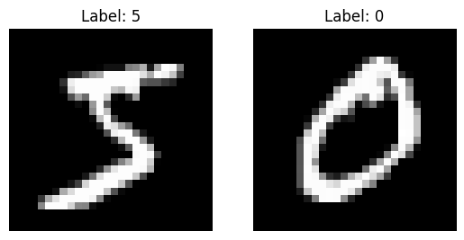
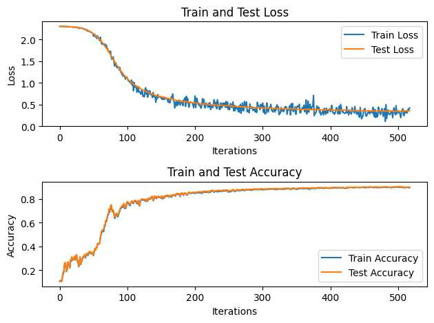

不依靠PyTorch和TensorFlow做手写数字识别
不依靠PyTorch和TensorFlow做手写数字识别
这章我们来看下如何不通过调用python深度学习的库来写CNN网络。
所有机器学习都可以看成三个步骤：
定义方程的框架，输入是什么 输出是什么 中间如何从输入到输出
定义损失函数 衡量模型预测与实际目标之间差异的指标。
最优化算法 根据定义的框架和损失函数找出模型最优的参数
在下列例子中我们用到的是MNIST 数据集，一个包含手写数字图像的经典数据集，用于机器学习和模式识别的基准测试。这些图像是 28x28 像素的灰度图像，表示手写的数字 0 到 9。在代码中，x_train 包含了 60000 个训练样本，每个样本是一个经过归一化处理的大小为 784 (28x28) 的一维数组，代表一个手写数字图像。而 t_train 则是每个样本对应的标签，使用了 one-hot 编码，表示了对应的数字类别。
下载数据集
import sys, os
sys.path.append(os.pardir)
import numpy as np
from dataset.mnist import load_mnist
from collections import OrderedDict
(x_train, t_train), (x_test, t_test) = \
load_mnist(normalize=True, one_hot_label=True)
print(x_train.shape) # (60000, 784)
print(t_train.shape) # (60000, 10)
打印下图片
import matplotlib.pyplot as plt
# 打印前两个样本及其标签
num_samples_to_display = 2
for i in range(num_samples_to_display):
sample_image = x_train[i].reshape(28, 28) # 将一维数组变形为 28x28 的图像矩阵
label = np.argmax(t_train[i]) # 获取标签
# 使用 matplotlib 绘制图像
plt.subplot(1, num_samples_to_display, i+1)
plt.imshow(sample_image, cmap='gray')
plt.title('Label: {}'.format(label))
plt.axis('off') # 关闭坐标轴显示
plt.show()

定义层对象
#激活函数
def sigmoid(a):
return 1/(1+np.exp(-a))
#输出转成概率
def softmax(x):
if x.ndim == 2:
x = x.T
x = x - np.max(x, axis=0)
y = np.exp(x) / np.sum(np.exp(x), axis=0)
return y.T
x = x - np.max(x) # 溢出对策
return np.exp(x) / np.sum(np.exp(x))
#损失函数
def cross_entropy_error(y, t):
if y.ndim == 1:
t = t.reshape(1, t.size)
y = y.reshape(1, y.size)
batch_size = y.shape[0]
return -np.sum(t * np.log(y + 1e-7)) / batch_size
#找偏导数
def numerical_gradient(f, x):
h = 1e-4 # 0.0001
grad = np.zeros_like(x)
it = np.nditer(x, flags=['multi_index'], op_flags=['readwrite'])
while not it.finished:
idx = it.multi_index
tmp_val = x[idx]
x[idx] = float(tmp_val) + h
fxh1 = f(x) # f(x+h)
x[idx] = tmp_val - h
fxh2 = f(x) # f(x-h)
grad[idx] = (fxh1 - fxh2) / (2*h)
x[idx] = tmp_val # 还原值
it.iternext()
return grad
class Relu:
def __init__(self):
self.mask = None
def forward(self, x):
self.mask = (x <= 0)
out = x.copy()
out[self.mask] = 0
return out
def backward(self, dout):
dout[self.mask] = 0
dx = dout
return dx
class Affine:
def __init__(self, W, b):
self.W =W
self.b = b
self.x = None
self.original_x_shape = None
# 权重和偏置参数的导数
self.dW = None
self.db = None
def forward(self, x):
# 对应张量
self.original_x_shape = x.shape
x = x.reshape(x.shape[0], -1)
self.x = x
out = np.dot(self.x, self.W) + self.b
return out
def backward(self, dout):
dx = np.dot(dout, self.W.T)
self.dW = np.dot(self.x.T, dout)
self.db = np.sum(dout, axis=0)
dx = dx.reshape(*self.original_x_shape) # 还原输入数据的形状（对应张量）
return dx
class SoftmaxWithLoss:
def __init__(self):
self.loss = None
self.y = None # softmax的输出
self.t = None # 监督数据
def forward(self, x, t):
self.t = t
self.y = softmax(x)
self.loss = cross_entropy_error(self.y, self.t)
return self.loss
def backward(self, dout=1):
batch_size = self.t.shape[0]
if self.t.size == self.y.size: # 监督数据是one-hot-vector的情况
dx = (self.y - self.t) / batch_size
else:
dx = self.y.copy()
dx[np.arange(batch_size), self.t] -= 1
dx = dx / batch_size
return dx
定义网络对象
class twolayerNet:
def __init__(self, input_size, hidden_size, output_size, weight_init_std=0.01):
self.params = {}
self.params["W1"] = weight_init_std * np.random.randn(input_size,hidden_size)
self.params["B1"] = np.zeros(hidden_size)
self.params["W2"] = weight_init_std * np.random.randn(hidden_size,output_size)
self.params["B2"] = np.zeros(output_size)
self.layers = OrderedDict()
self.layers['Affine1'] = \
Affine(self.params['W1'], self.params['B1'])
self.layers['Relu1'] = Relu()
self.layers['Affine2'] = \
Affine(self.params['W2'], self.params['B2'])
self.lastLayer = SoftmaxWithLoss()
def predict(self,x):
for layer in self.layers.values():
x = layer.forward(x)
return x
def loss(self,x,t):
y = self.predict(x)
return self.lastLayer.forward(y, t)
def accuracy(self,x,t):
y = self.predict(x)
y_max = np.argmax(y,axis=1)
t_max = np.argmax(t,axis=1)
return np.sum(y_max == t_max) / float(x.shape[0])
def numerical_gradient(self, x, t):
loss_W = lambda W: self.loss(x, t)
grads = {}
grads['W1'] = numerical_gradient(loss_W, self.params['W1'])
grads['B1'] = numerical_gradient(loss_W, self.params['B1'])
grads['W2'] = numerical_gradient(loss_W, self.params['W2'])
grads['B2'] = numerical_gradient(loss_W, self.params['B2'])
return grads
def gradient(self, x, t):
# forward
self.loss(x, t)
# backward
dout = 1
dout = self.lastLayer.backward(dout)
layers = list(self.layers.values())
layers.reverse()
for layer in layers:
dout = layer.backward(dout)
# 设定
grads = {}
grads['W1'] = self.layers['Affine1'].dW
grads['B1'] = self.layers['Affine1'].db
grads['W2'] = self.layers['Affine2'].dW
grads['B2'] = self.layers['Affine2'].db
return grads
梯度检验
network = twolayerNet(input_size=784, hidden_size=50, output_size=10)
x_batch = x_train[:3]
t_batch = t_train[:3]
grad_numerical = network.numerical_gradient(x_batch, t_batch)
grad_backprop = network.gradient(x_batch, t_batch)
# 求各个权重的绝对误差的平均值
for key in grad_numerical.keys():
diff = np.average( np.abs(grad_backprop[key] - grad_numerical[key]) )
print(key + ":" + str(diff))
#>> W1:3.094195647812538e-10
#>> B1:2.1242950091990548e-09
#>> W2:4.7896988270535004e-09
#>> B2:1.4020604089531874e-07
训练
# 超参数
iters_num = 1000
train_size = x_train.shape[0]
batch_size = 100
learning_rate = 0.1
train_loss_list = []
test_loss_list = []
train_acc_list = []
test_acc_list = []
iter_per_epoch = max(train_size / batch_size, 1)
#early stopping
best_test_loss = np.inf
patience = 20 #几次迭代没有改善终止
no_improvement_count = 0
network = twolayerNet(input_size=784, hidden_size=50, output_size=10)
for i in range(iters_num):
# 获取mini-batch
batch_mask = np.random.choice(train_size, batch_size)
x_batch = x_train[batch_mask]
t_batch = t_train[batch_mask]
# 计算梯度
grad = network.gradient(x_batch, t_batch)
# 更新参数
for key in ('W1', 'B1', 'W2', 'B2'):
network.params[key] -= learning_rate * grad[key]
# 记录学习过程
loss = network.loss(x_batch, t_batch)
print(f'train loss is {loss}')
print(f'train accuracy is {network.accuracy(x_batch, t_batch)}')
train_loss_list.append(loss)
test_loss = network.loss(x_test, t_test)
print(f'test loss is {test_loss}')
print(f'test accuracy is {network.accuracy(x_test, t_test)}')
test_loss_list.append(test_loss)
train_acc = network.accuracy(x_train, t_train)
test_acc = network.accuracy(x_test, t_test)
train_acc_list.append(train_acc)
test_acc_list.append(test_acc)
if test_loss < best_test_loss:
best_test_loss = test_loss
no_improvement_count = 0
else:
no_improvement_count += 1
# Early stopping condition
if no_improvement_count >= patience:
print("Early stopping: No improvement in test loss for {} epochs.".format(patience))
break
损失图展示
plt.subplot(2, 1, 1)
plt.plot(train_loss_list, label='Train Loss')
plt.plot(test_loss_list, label='Test Loss')
plt.xlabel('Iterations')
plt.ylabel('Loss')
plt.title('Train and Test Loss')
plt.legend()
# Plotting train accuracy and test accuracy
plt.subplot(2, 1, 2)
plt.plot(train_acc_list, label='Train Accuracy')
plt.plot(test_acc_list, label='Test Accuracy')
plt.xlabel('Iterations')
plt.ylabel('Accuracy')
plt.title('Train and Test Accuracy')
plt.legend()
plt.tight_layout()
plt.show()
